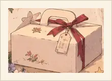

GAME GUIDE시작 전
먼저, 이렇게 진행돼
모두에게 두 개의 기억이 주어져. 그중 한 사람의 기억 두 조각만 서로 뒤섞여 있어.
기억을 비교하고 FACT를 함께 확인한 뒤, 누구의 기억이 이상한지 찾아내면 돼.
기억을 비교하고 FACT를 함께 확인한 뒤, 누구의 기억이 이상한지 찾아내면 돼.
01 기억 확인
첫 기억을 받고 대화해.
첫 기억을 받고 대화해.
02 FACT 함께 공개
전원이 준비하면 동시에 확인해.
전원이 준비하면 동시에 확인해.
03 두 번째 기억
새 기억까지 더해 다시 비교해.
새 기억까지 더해 다시 비교해.
04 최종 지목
기억이 뒤섞인 한 명을 골라.
기억이 뒤섞인 한 명을 골라.
거짓말 게임이 아니야. 카드에 적힌 기억은 네가 사실이라고 믿는 내용이야.

ROUND 1 · 첫 번째 기억 비교
별사탕 병에는 빨간 리본이 묶여 있었다.
FACT 01을 볼 준비가 됐어?

ROUND 2 · 두 번째 기억까지 비교
별사탕 병에는 빨간 리본이 묶여 있었다.
사진을 찍기 전에 종이 두 번 울렸다.

FACT 01 · 병은 파란 리본, 케이크 상자는 빨간 리본.
FACT 02를 볼 준비가 됐어?